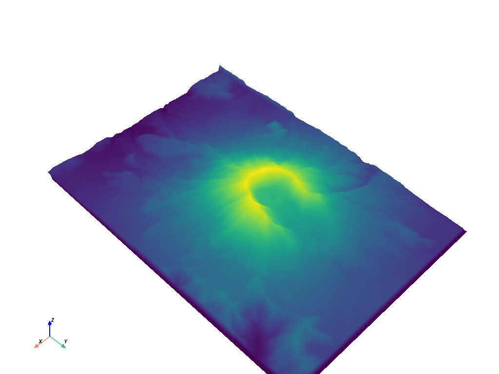
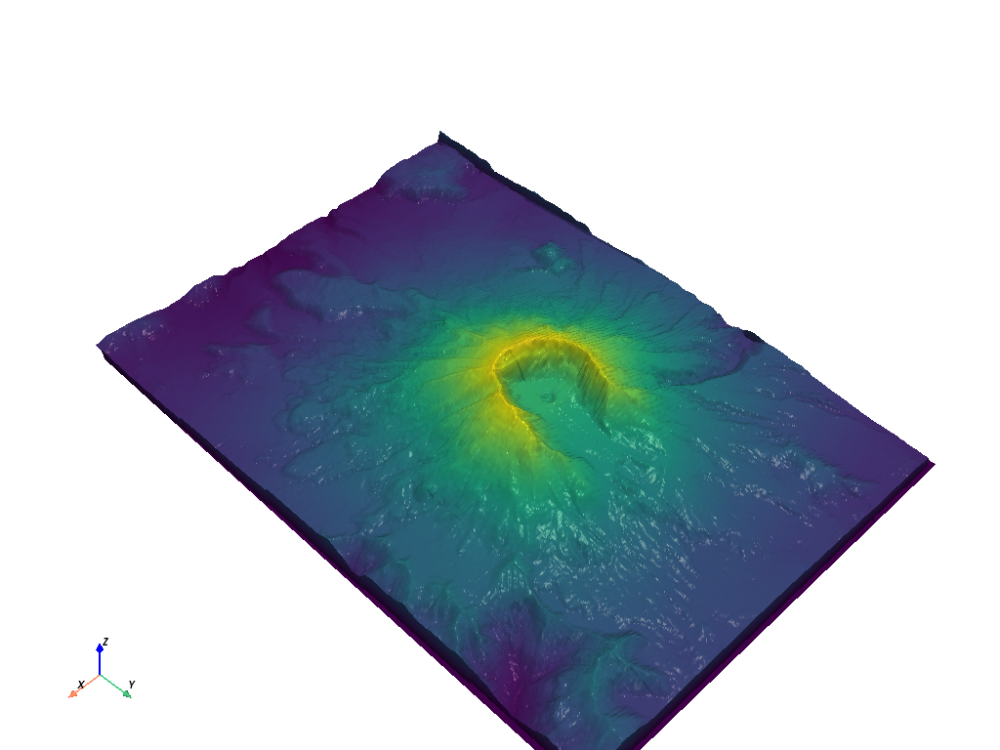

Note
Go to the end to download the full example code or to run this example in your browser via JupyterLite or Binder
Lighting Properties#
Control aspects of the rendered mesh’s lighting such as Ambient, Diffuse,
and Specular. These options only work if the lighting argument to
add_mesh is True (it’s True by default).
You can turn off all lighting for the given mesh by passing lighting=False
to add_mesh.
First, lets take a look at the mesh with default lighting conditions
What about with no lighting
Demonstration of the specular property
p = pv.Plotter(shape=(1, 2), window_size=[1500, 500])
p.subplot(0, 0)
p.add_mesh(mesh, show_scalar_bar=False)
p.add_text("No Specular")
p.subplot(0, 1)
s = 1.0
p.add_mesh(mesh, specular=s, show_scalar_bar=False)
p.add_text(f"Specular of {s}")
p.link_views()
p.view_isometric()
p.show(cpos=cpos)
Just specular
Specular power
Demonstration of all three in use
Total running time of the script: (0 minutes 11.817 seconds)
Estimated memory usage: 87 MB